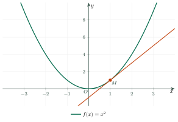
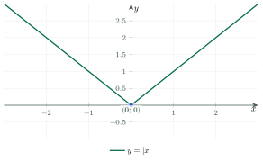
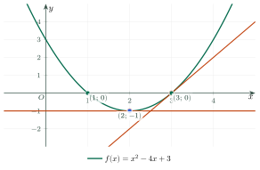

The Derivative: DefinitionĐạo hàm: định nghĩa và tiếp tuyến
Grade 11 · Topic: DerivativesLớp 11 · Chủ đề: Đạo hàm
1Lesson IntroductionGiới thiệu bài học
Learning goalsMục tiêu bài học
By the end of this lesson you can:
Sau bài học này, em có thể:
define \(f'(x_0)\) as a limit of difference quotients;
định nghĩa \(f'(x_0)\) là giới hạn của tỉ số biến thiên;
explain the derivative as the slope of the tangent line;
giải thích đạo hàm là hệ số góc của tiếp tuyến;
write the equation of a tangent line at a given point;
viết phương trình tiếp tuyến tại một điểm cho trước;
recognize points where a function has no derivative.
nhận ra những điểm mà hàm số không có đạo hàm.
2Mathematical VocabularyTừ vựng Toán học
derivative – the number \(f'(x_0)\) that tells how fast \(f\) changes at \(x_0\).
Đạo hàm – số \(f'(x_0)\) cho biết \(f\) thay đổi nhanh thế nào tại \(x_0\).
difference quotient – the slope of the secant line through two points of the graph.
Tỉ số biến thiên – hệ số góc của cát tuyến đi qua hai điểm của đồ thị.
secant line – a line that meets a curve at two points.
Cát tuyến – đường thẳng cắt đường cong tại hai điểm.
tangent line – the line that just touches the curve at a point and has the same direction there.
Tiếp tuyến – đường thẳng chỉ chạm đường cong tại một điểm và cùng hướng với đường cong ở đó.
point of tangency – the point where the tangent line touches the curve.
Tiếp điểm – điểm mà tiếp tuyến chạm đường cong.
slope – how steep a line is: the rise divided by the run.
Hệ số góc – độ dốc của đường thẳng: độ tăng chia cho độ rộng.
differentiable – having a derivative at that point.
Có đạo hàm – tồn tại đạo hàm tại điểm đó.
rate of change – how quickly a quantity changes.
Tốc độ thay đổi – đại lượng thay đổi nhanh hay chậm.
3Useful English PhrasesCụm từ tiếng Anh thường gặp
Find the derivative of \(f\) at \(x=2\).
Tìm đạo hàm của \(f\) tại \(x=2\).
Use the definition of the derivative.
Dùng định nghĩa của đạo hàm.
Find the slope of the tangent line at the point.
Tìm hệ số góc của tiếp tuyến tại điểm đó.
Write the equation of the tangent line.
Viết phương trình tiếp tuyến.
Is the function differentiable at this point?
Hàm số có đạo hàm tại điểm này không?
Find the point where the tangent line is horizontal.
Tìm điểm mà tại đó tiếp tuyến nằm ngang.
4Prerequisite ReviewÔn tập kiến thức nền
Slope of a line. The line through \((x_1;y_1)\) and \((x_2;y_2)\) has slope \(k=\dfrac{y_2-y_1}{x_2-x_1}\).
Hệ số góc. Đường thẳng qua \((x_1;y_1)\) và \((x_2;y_2)\) có hệ số góc \(k=\dfrac{y_2-y_1}{x_2-x_1}\).
Line through a point. The line with slope \(k\) through \((x_0;y_0)\) is \(y=k(x-x_0)+y_0\).
Đường thẳng qua một điểm. Đường thẳng có hệ số góc \(k\) đi qua \((x_0;y_0)\) là \(y=k(x-x_0)+y_0\).
Limits. You will use \(\lim_{h\to 0}\) and the factoring technique from the previous lesson.
Giới hạn. Bài này dùng \(\lim_{h\to 0}\) và kĩ thuật phân tích của bài trước.
5TheoryLý thuyết
5.1 Definition of the derivativeĐịnh nghĩa đạo hàm
DefinitionĐịnh nghĩa
The fraction is the difference quotient: the slope of the secant line through \((x_0;f(x_0))\) and \((x_0+h;f(x_0+h))\). When \(h\to 0\) the secant line turns into the tangent line.
Phân số là tỉ số biến thiên: hệ số góc của cát tuyến qua \((x_0;f(x_0))\) và \((x_0+h;f(x_0+h))\). Khi \(h\to 0\), cát tuyến trở thành tiếp tuyến.
Tangent linePhương trình tiếp tuyến
The slope of the tangent line at the point of tangency \((x_0;f(x_0))\) is \(f'(x_0)\). The tangent line is
Hệ số góc của tiếp tuyến tại tiếp điểm \((x_0;f(x_0))\) là \(f'(x_0)\). Phương trình tiếp tuyến là

5.2 Quick rulesMột số quy tắc nhanh
| FunctionHàm số | DerivativeĐạo hàm |
|---|---|
| \(c\) (a constant) | \(0\) |
| \(x\) | \(1\) |
| \(x^2\) | \(2x\) |
| \(x^3\) | \(3x^2\) |
| \(x^n\) | \(n\,x^{n-1}\) |
| \(u+v\) | \(u'+v'\) |
| \(c\cdot u\) | \(c\cdot u'\) |
These rules follow from the definition; the next lesson explains them in detail.
Các quy tắc này suy ra từ định nghĩa; bài sau sẽ giải thích chi tiết.
5.3 When there is no derivativeKhi nào không có đạo hàm

Watch out!Lưu ý
A function has no derivative at a corner, at a jump, at a vertical tangent, or where it is not defined.
Hàm số không có đạo hàm tại điểm góc nhọn, chỗ đứt, nơi tiếp tuyến thẳng đứng hoặc nơi hàm không xác định.
6Worked ExamplesVí dụ có lời giải
ExampleVí dụ 1BasicCơ bản – Derivative from the definitionĐạo hàm theo định nghĩa
Use the definition to find \(f'(3)\) for \(f(x)=x^2\).
Dùng định nghĩa để tìm \(f'(3)\) với \(f(x)=x^2\).
Analysis: Write the difference quotient with \(x_0=3\), simplify, then let \(h\to 0\).
Phân tích: Viết tỉ số biến thiên với \(x_0=3\), rút gọn rồi cho \(h\to 0\).
\(\dfrac{f(3+h)-f(3)}{h}=\dfrac{(3+h)^2-9}{h}=\dfrac{6h+h^2}{h}\).
\(\dfrac{f(3+h)-f(3)}{h}=\dfrac{(3+h)^2-9}{h}=\dfrac{6h+h^2}{h}\).
For \(h\ne 0\) this equals \(6+h\).
Với \(h\ne 0\) biểu thức bằng \(6+h\).
\(\lim_{h\to 0}(6+h)=6\).
\(\lim_{h\to 0}(6+h)=6\).
ExampleVí dụ 2IntermediateTrung bình – A tangent lineViết phương trình tiếp tuyến
Find the equation of the tangent line to \(y=x^3\) at the point \((1;1)\).
Viết phương trình tiếp tuyến của \(y=x^3\) tại điểm \((1;1)\).
Analysis: We need the slope \(f'(1)\), then we use \(y=f'(x_0)(x-x_0)+f(x_0)\).
Phân tích: Cần hệ số góc \(f'(1)\), rồi dùng \(y=f'(x_0)(x-x_0)+f(x_0)\).
\(f'(x)=3x^2\), so \(f'(1)=3\).
\(f'(x)=3x^2\) nên \(f'(1)=3\).
\(y=3(x-1)+1=3x-2\).
\(y=3(x-1)+1=3x-2\).
ExampleVí dụ 3AdvancedNâng cao – Special tangent linesTiếp tuyến đặc biệt
For \(f(x)=x^2-4x+3\):
(a) find the point where the tangent line is horizontal;
(b) find the tangent line parallel to \(y=2x+1\).
Cho \(f(x)=x^2-4x+3\):
(a) tìm điểm mà tiếp tuyến nằm ngang;
(b) viết tiếp tuyến song song với \(y=2x+1\).

Analysis: Here \(f'(x)=2x-4\). A horizontal line has slope 0, and parallel lines have the same slope.
Phân tích: Ở đây \(f'(x)=2x-4\). Đường nằm ngang có hệ số góc 0, hai đường song song có cùng hệ số góc.
(a) \(2x-4=0\Rightarrow x=2\), \(f(2)=-1\): the point is \((2;-1)\).
(a) \(2x-4=0\Rightarrow x=2\), \(f(2)=-1\): điểm cần tìm là \((2;-1)\).
(b) The slope is 2: \(2x-4=2\Rightarrow x=3\), \(f(3)=0\).
(b) Hệ số góc bằng 2: \(2x-4=2\Rightarrow x=3\), \(f(3)=0\).
The tangent line: \(y=2(x-3)+0=2x-6\). It is parallel to \(y=2x+1\) and different from it.
Tiếp tuyến: \(y=2(x-3)+0=2x-6\). Nó song song với \(y=2x+1\) và khác đường này.
7PracticeBài tập luyện tập
A. Multiple ChoiceA. Trắc nghiệm
If \(f(x)=x^2\), what is \(f'(1)\)?
Nếu \(f(x)=x^2\) thì \(f'(1)\) bằng bao nhiêu?
Answer: b. \(f'(x)=2x\), so \(f'(1)=2\).
Đáp án b. \(f'(x)=2x\) nên \(f'(1)=2\).
If \(f(x)=x^3\), what is \(f'(2)\)?
Nếu \(f(x)=x^3\) thì \(f'(2)\) bằng bao nhiêu?
Answer: c. \(f'(x)=3x^2\), so \(f'(2)=12\).
Đáp án c. \(f'(x)=3x^2\) nên \(f'(2)=12\).
What is the tangent line to \(y=x^2\) at \((1;1)\)?
Tiếp tuyến của \(y=x^2\) tại \((1;1)\) là đường nào?
Answer: a. \(y=2(x-1)+1=2x-1\).
Đáp án a. \(y=2(x-1)+1=2x-1\).
B. True or FalseB. Đúng hoặc sai
If \(f'(x_0)=0\), the tangent line at \(x_0\) is horizontal.
Nếu \(f'(x_0)=0\) thì tiếp tuyến tại \(x_0\) nằm ngang.
True. A line with slope 0 is horizontal.
Đúng. Đường thẳng có hệ số góc 0 thì nằm ngang.
C. Short AnswerC. Trả lời ngắn
If \(f(x)=x^2-3x\), find \(f'(4)\).
Cho \(f(x)=x^2-3x\). Tìm \(f'(4)\).
Enter a number.
Nhập một số.
Answer: 5. \(f'(x)=2x-3\), \(f'(4)=5\).
Đáp số: 5. \(f'(x)=2x-3\), \(f'(4)=5\).
Find the slope of the tangent line to \(y=x^3\) at \(x=-1\).
Tìm hệ số góc của tiếp tuyến của \(y=x^3\) tại \(x=-1\).
Enter a number.
Nhập một số.
Answer: 3. \(3\cdot(-1)^2=3\).
Đáp số: 3. \(3\cdot(-1)^2=3\).
A. Multiple ChoiceA. Trắc nghiệm
If \(f(x)=x^2\), what is \(f'(-3)\)?
Nếu \(f(x)=x^2\) thì \(f'(-3)\) bằng bao nhiêu?
Answer: b. \(f'(x)=2x\), so \(f'(-3)=-6\).
Đáp án b. \(f'(x)=2x\) nên \(f'(-3)=-6\).
If \(f(x)=x^3\), what is \(f'(1)\)?
Nếu \(f(x)=x^3\) thì \(f'(1)\) bằng bao nhiêu?
Answer: c. \(3\cdot 1^2=3\).
Đáp án c. \(3\cdot 1^2=3\).
What is the tangent line to \(y=x^3\) at \((1;1)\)?
Tiếp tuyến của \(y=x^3\) tại \((1;1)\) là đường nào?
Answer: b. \(y=3(x-1)+1=3x-2\).
Đáp án b. \(y=3(x-1)+1=3x-2\).
B. True or FalseB. Đúng hoặc sai
If \(f'(x_0)\gt 0\), the tangent line goes down from left to right.
Nếu \(f'(x_0)\gt 0\) thì tiếp tuyến đi xuống từ trái sang phải.
False. A positive slope means the line goes up.
Sai. Hệ số góc dương nghĩa là đường thẳng đi lên.
C. Short AnswerC. Trả lời ngắn
If \(f(x)=x^2+5x\), find \(f'(1)\).
Cho \(f(x)=x^2+5x\). Tìm \(f'(1)\).
Enter a number.
Nhập một số.
Answer: 7. \(f'(x)=2x+5\).
Đáp số: 7. \(f'(x)=2x+5\).
Find the slope of the tangent line to \(y=x^3-x\) at \(x=2\).
Tìm hệ số góc của tiếp tuyến của \(y=x^3-x\) tại \(x=2\).
Enter a number.
Nhập một số.
Answer: 11. \(y'=3x^2-1=11\).
Đáp số: 11. \(y'=3x^2-1=11\).
A. Multiple ChoiceA. Trắc nghiệm
If \(f(x)=x^2\), what is \(f'(5)\)?
Nếu \(f(x)=x^2\) thì \(f'(5)\) bằng bao nhiêu?
Answer: b. \(2\cdot 5=10\).
Đáp án b. \(2\cdot 5=10\).
If \(f(x)=x^3\), what is \(f'(-2)\)?
Nếu \(f(x)=x^3\) thì \(f'(-2)\) bằng bao nhiêu?
Answer: b. \(3\cdot(-2)^2=12\).
Đáp án b. \(3\cdot(-2)^2=12\).
What is the tangent line to \(y=x^2\) at \((-1;1)\)?
Tiếp tuyến của \(y=x^2\) tại \((-1;1)\) là đường nào?
Answer: c. The slope is \(2\cdot(-1)=-2\): \(y=-2(x+1)+1=-2x-1\).
Đáp án c. Hệ số góc là \(2\cdot(-1)=-2\): \(y=-2(x+1)+1=-2x-1\).
B. True or FalseB. Đúng hoặc sai
The function \(y=|x|\) has a derivative at \(x=0\).
Hàm số \(y=|x|\) có đạo hàm tại \(x=0\).
False. The graph has a sharp corner at 0.
Sai. Đồ thị có góc nhọn tại 0.
C. Short AnswerC. Trả lời ngắn
If \(f(x)=x^2-6x\), find \(f'(5)\).
Cho \(f(x)=x^2-6x\). Tìm \(f'(5)\).
Enter a number.
Nhập một số.
Answer: 4. \(f'(x)=2x-6\).
Đáp số: 4. \(f'(x)=2x-6\).
Find the slope of the tangent line to \(y=x^3+2x\) at \(x=1\).
Tìm hệ số góc của tiếp tuyến của \(y=x^3+2x\) tại \(x=1\).
Enter a number.
Nhập một số.
Answer: 5. \(y'=3x^2+2=5\).
Đáp số: 5. \(y'=3x^2+2=5\).
8Common MistakesLỗi thường gặp
Math knowledge. Mixing up \(f'(x_0)\) (a number) with \(f(x_0)\) (the height of the graph).
Kiến thức Toán. Nhầm \(f'(x_0)\) (một số, độ dốc) với \(f(x_0)\) (độ cao của đồ thị).
Tangent lines. Writing \(y=f'(x_0)(x-x_0)\) and forgetting \(+f(x_0)\).
Tiếp tuyến. Viết \(y=f'(x_0)(x-x_0)\) và quên \(+f(x_0)\).
Differentiability. Assuming every continuous function has a derivative everywhere. The graph of \(|x|\) is continuous but has a corner at 0.
Có đạo hàm. Cho rằng mọi hàm liên tục đều có đạo hàm ở mọi điểm. Đồ thị \(|x|\) liên tục nhưng có góc nhọn tại 0.
Using the definition. Substituting \(h=0\) too early, which gives \(\dfrac00\). Simplify first.
Dùng định nghĩa. Thay \(h=0\) quá sớm nên được \(\dfrac00\). Hãy rút gọn trước.
9Lesson SummaryTổng kết
\(f'(x_0)=\lim_{h\to 0}\dfrac{f(x_0+h)-f(x_0)}{h}\): the limit of the slopes of secant lines.
\(f'(x_0)=\lim_{h\to 0}\dfrac{f(x_0+h)-f(x_0)}{h}\): giới hạn của hệ số góc các cát tuyến.
\(f'(x_0)\) is the slope of the tangent line at \((x_0;f(x_0))\).
\(f'(x_0)\) là hệ số góc của tiếp tuyến tại \((x_0;f(x_0))\).
Tangent line: \(y=f'(x_0)(x-x_0)+f(x_0)\). Horizontal tangent: \(f'(x_0)=0\).
Tiếp tuyến: \(y=f'(x_0)(x-x_0)+f(x_0)\). Tiếp tuyến nằm ngang: \(f'(x_0)=0\).
\((x^n)'=nx^{n-1}\), \((c)'=0\), \((u+v)'=u'+v'\).
\((x^n)'=nx^{n-1}\), \((c)'=0\), \((u+v)'=u'+v'\).
Key English phrases: use the definition; slope of the tangent line; equation of the tangent line; differentiable.
Cụm tiếng Anh cần nhớ: use the definition (dùng định nghĩa); slope of the tangent line (hệ số góc của tiếp tuyến); equation of the tangent line (phương trình tiếp tuyến); differentiable (có đạo hàm).